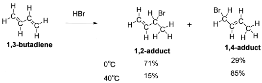
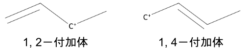

令和5年度 問3 有機化学及び燃料
次の記述中の、【 】に入る語句及び数値の組合せとして、最も適切なものはどれか。
1, 3－ブタジエンへのHBrの【 A 】付加反応において、0℃の反応条件下では71：29の比で1, 2－および1, 4－付加体を与えるが、40℃で反応を行うと、生成物の比は15：85となる。さらに、0℃で得られた生成物をHBrの存在下に40℃に加熱すると生成物の比は71：29から徐々に15：85に変化する。

この反応に対する温度の影響を次のようにして説明することができる。二つの反応生成物の安定性を考えた時、熱力学的に安定なのは、【 B 】付加体である。まずはじめに低温（0℃）で反応を行った場合、1, 2－および1, 4－付加体を生成する二つの経路が非可逆で平衡に達していないので、二つの反応生成物の熱力学的安定性は重要ではない。非可逆反応の生成物は【 C 】にのみ依存し、生成物の安定性には依存しない。そのような反応は【 D 】下にあるといわれる。しかし、高温（40℃）においては二つの経路が可逆で平衡に達するようになると、可逆反応の生成物は安定性にのみ依存し、【 C 】には依存しない。このような反応は平衡の支配下、または、【 E 】下にあるといわれる。
| A | B | C | D | E | ||
|---|---|---|---|---|---|---|
| ① | 求電子 | 1, 4－ | 反応速度 | 速度支配 | 熱力学支配 | |
| ② | 求電子 | 1, 2－ | 反応速度 | 速度支配 | 熱力学支配 | |
| ③ | 求核 | 1, 4－ | 反応物組成 | 熱力学支配 | 速度支配 | |
| ④ | 求電子 | 1, 2－ | 反応物組成 | 熱力学支配 | 速度支配 | |
| ⑤ | 求核 | 1, 2－ | 反応速度 | 速度支配 | 熱力学支配 |
この付加反応は、1, 3－ブタジエンの二重結合の電子からHBrのδ+に偏った水素へ求核攻撃します。そのためAは"HBrの"求電子反応です。
一般に生成物であるアルケンは、超共役の効果が得られるため多置換体の方が安定します。そのためBは1,4－付加体です。
問題では熱力学支配と速度論支配について問われています。
- 熱力学支配：生成物の安定性に着目
- 速度論支配：活性化エネルギーの低さに着目
まず1, 3－ブタジエンに水素原子が負荷することで、中間体であるカルボカチオンが生成します。基本的な考え方として、カルボカチオンは水素置換数の少ない（級数の大きい）炭素原子ほど超共役効果によって安定化されます（マルコフニコフ則）。そのため第一級カチオンである1, 4－付加体よりも第二級カチオン1, 2－付加体の方が安定なため生成物の量が増加します。

最初に低温（0℃）で反応している間は、生成物ではなくカルボカチオンの生成しやすさが重要視され、1, 2－付加体が多く生成します。そのため、この時点では速度論支配となっており、Cは反応速度・Dは速度支配です。
ただし高温（40℃）で反応を平衡状態に近づけると、生成物の安定性が重要視され、1, 4－付加体が多く生成します。そのためEは熱力学支配です。